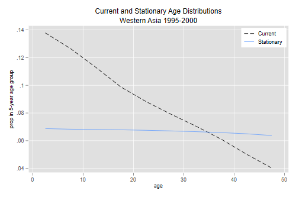
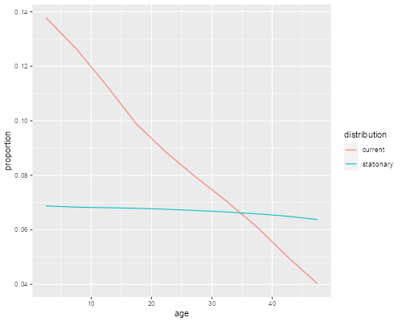

<h2 id="population-momentum">Population Momentum</h2>
<p>This unit focuses on population momentum, the notion that for most of
the world the population would continue to grow even if fertility
dropped suddenly to replacement levels.</p>

{% include srtabs.html %}

<h3 id="momentum-in-western-asia">Momentum in Western Asia</h3>
<p>We turn to Box 7.3 in the textbook, which uses data from Western Asia
in 1995-2000 to illustrate the Preston-Guillot calculations. We start by
entering the female population, the survival ratios, and the maternity
function, and then compute the NRR</p>
<pre class='stata'>. clear

. mata:
───────────────────────────────────────────────── mata (type end to exit) ──────
:   N = (12013, 11027, 9856, 8614, 7694, 6893, 6135, 5318, 4376, 3510)'

:   L = (4.834, 4.803, 4.789, 4.773, 4.748, 4.716, 4.678, 4.631, 4.570, 4.483)'

:   m = (0, 0, 0, 0.043, 0.112, 0.112, 0.058, 0.029, 0.007, 0)'

:   nrr = sum (L :* m)

:   nrr     
  1.70282

: end
────────────────────────────────────────────────────────────────────────────────
</pre>
<pre class='r'>> N &lt;- c(12013, 11027, 9856, 8614, 7694, 6893, 6135, 5318, 4376, 3510)
> L &lt;- c(4.834, 4.803, 4.789, 4.773, 4.748, 4.716, 4.678, 4.631, 4.570, 4.483)
> m &lt;- c(0, 0, 0, 0.043, 0.112, 0.112, 0.058, 0.029, 0.007, 0)
> nrr &lt;- sum (L * m)
> nrr 
[1] 1.70282
</pre>
<p>We see that the net reproduction ratio is 1.703 daughters per woman.
The population of Western Asia was growing fast at the turn of the
century. What would have happened if fertility had dropped instantly to
replacement level?</p>
<p>One way to answer the question would be to adjust the maternity
function and do the projection. Here we will consider the
alternatives.</p>
<h3 id="the-preston-guillot-method">The Preston-Guillot Method</h3>
<p>We first need to estimate the replacement-level maternity function,
which we do by simply dividing the observed rates by the NRR. (Note that
there are many other maternity functions that would work just as well,
we follow tradition in assuming a proportionate decline.) We also need
the mean age of the new maternity schedule.</p>
<pre class='stata'>. mata:
───────────────────────────────────────────────── mata (type end to exit) ──────
:   ms = m/nrr

:   sum(L :* ms)
  1

:   a = range(0,45,5) :+ 2.5

:   as = sum( a :* ms :* L)

:   as
  26.60042753

: end
────────────────────────────────────────────────────────────────────────────────
</pre>
<pre class='r'>> ms &lt;- m/nrr
> sum(L * ms)
[1] 1
> a &lt;- seq(0, 45,5) + 2.5
> as &lt;- sum(a * ms * L)
> as
[1] 26.60043
</pre>
<p>The mean age is 26.60, in agreement with the textbook. (Note that we
computed just the numerator of the mean because the denominator is of
course one, as we verified in the previous step.)</p>
<p>The only tricky step is calculation of the weight function,
representing the expected number of births that will occur above each
age divided by the sum of those births over all ages, which is, of
course, the mean age at birth in the stationary population. (The analogy
is integrating a survival curve to obtain expectation of life.)</p>
<p>The calculation requires a tail sum, which we obtain as a total sum
minus the cumulative or running sume:</p>
<pre class='stata'>. mata:
───────────────────────────────────────────────── mata (type end to exit) ──────
:   ba = ms :* L

:   w = 5 :* (ba:/2 + (sum(ba) :- runningsum(ba))):/as

:   w
                  1
     ┌───────────────┐
   1 │  .1879669037  │
   2 │  .1879669037  │
   3 │  .1879669037  │
   4 │  .1766391828  │
   5 │  .1359612405  │
   6 │  .0774586087  │
   7 │  .0333310594  │
   8 │  .0109435788  │
   9 │  .0017656186  │
  10 │            0  │
     └───────────────┘

: end
────────────────────────────────────────────────────────────────────────────────
</pre>
<pre class='r'>> ba &lt;- ms * L
> w &lt;- 5 * (ba/2 + (sum(ba) - cumsum(ba)))/as
> w 
 [1] 0.187966904 0.187966904 0.187966904 0.176639183 0.135961241 0.077458609
 [7] 0.033331059 0.010943579 0.001765619 0.000000000
</pre>
<p>These values are 5 times those published in the textbook, the reason
will be revealed at the end of this section.</p>
<p>Now all we need to do is compute the ratio of the current to the
stationary age distribution, multiply by the weights we just computed,
and sum across ages (see Equation 7.21 in the textbook). In computing
the age distributions we divide the numbers in each age group by the
total number in all ages, not just 0-50, using the values given in Box
7.3, namely the population total for the N’s and life expectancy for the
L’s. (If we had the data for all ages we could, of course, compute these
ourselves.)</p>
<pre class='stata'>. mata:
───────────────────────────────────────────────── mata (type end to exit) ──────
:   ca = N/87176

:   sa = L/70.3

:   sum( w :* ca :/ sa)
  1.609443248

: end
────────────────────────────────────────────────────────────────────────────────
</pre>
<pre class='r'>> ca &lt;- N/87176
> sa &lt;- L/70.3
> sum( w * ca / sa)
[1] 1.609443
</pre>
<p>And we discover that the female population will grow another 61.0%,
even if rates dropped immediately to replacement level. A similar
calculation with the male population and life table and the same weights
shows that the male population would grow another 50.4%. The weighted
average of these numbers is 56%. Finally we plot the current and
stationary age distributions.</p>
<pre class='stata'>. set obs 10
Number of observations (_N) was 0, now 10.

. mata:
───────────────────────────────────────────────── mata (type end to exit) ──────
:   st_store(.,st_addvar("float","a"),a)

:   st_store(.,st_addvar("float","ca"),ca)

:   st_store(.,st_addvar("float","sa"),sa)

: end
────────────────────────────────────────────────────────────────────────────────

. line ca sa a, lpat(dash solid) xtitle(age) ytitle(prop in 5-year age group) //
> /
>   title(Current and Stationary Age Distributions) ///
>   subtitle(Western Asia 1995-2000) ///
>   legend(order(1 "Current" 2 "Stationary") col(1) ring(0) pos(1))

. graph export momentum.png, width(500) replace
file momentum.png saved as PNG format
</pre>
<p></p>
<pre class='r'>> library(ggplot2)
> d &lt;- data.frame( age = c(a,a), proportion = c(ca, sa), 
+   distribution = c(rep("current",length(a)),rep("stationary",length(a))))
> ggplot(d, aes(age, proportion, color = distribution)) + geom_line()
> ggsave("momentumr.png", width = 500/72, height = 400/72, dpi = 72)
</pre>
<p></p>
<p>The reason for the substantial momentum should be clear from the
nature of the age distributions.</p>
<p>Now for the missing multiplier. The textbook doesn’t multiply by 5 in
computing the weights, but divides the <sub>n</sub>L<sub>x</sub>’s by 5,
which produces the same end result. However, as explained on page 162,
all three ingredients are distributions that sum to one. Mine do,
whereas the weights in the text sum to 0.2, as does the implied
stationary age distribution. These, of course, appear in the numerator
and denominator of equation 7.21, so the factor of five cancels. To plot
the age distributions, however, one needs to use
<sub>n</sub>L<sub>x</sub>/e<sub>0</sub>, not
(<sub>n</sub>L<sub>x</sub>/5)/e<sub>0</sub>.</p>
<h3 id="keyfitzs-approximation">Keyfitz’s Approximation</h3>
<p>The idea of population momentum originated with Keyfitz, and proved
quite influential in policy circles. His formulation assumed that the
population was stable at the outset and the reduction in rates was
proportionally the same at all ages, but neither assumption is required
in the previous development. Because the method is still popular,
however, we apply it to Western Asia.</p>
<p>In the original 1971 paper, momentum is given by <em>b
e<sub>0</sub>(R-1)/(R r m)</em>, but the expression in common use is
Frauhental’s approximation <em>b e<sub>0</sub>/√R</em>, where <em>R</em>
is the NRR. So momentum is directly proportional to the birth rate and
the expectation of life and inversely proportional to the square root of
the net reproduction ratio.</p>
<p>For our example we already have the NRR and the mean age of
childbearing, so we just need the birth rate to apply the formula</p>
<pre class='stata'>. mata
───────────────────────────────────────────────── mata (type end to exit) ──────
:   cbr = sum(N :* m)/87176

:   cbr
  .0291918647

:   cbr * 70.3 / sqrt(nrr)
  1.57265258

: end
────────────────────────────────────────────────────────────────────────────────
</pre>
<pre class='r'>> cbr &lt;- sum(N * m)/87176; cbr
[1] 0.02919186
> cbr * 70.3 / sqrt(nrr)
[1] 1.572653
</pre>
<p>We obtain a momentum of 1.57, which is not far from the more exact
1.61 computed above. Not bad for a simple calculation.</p>
